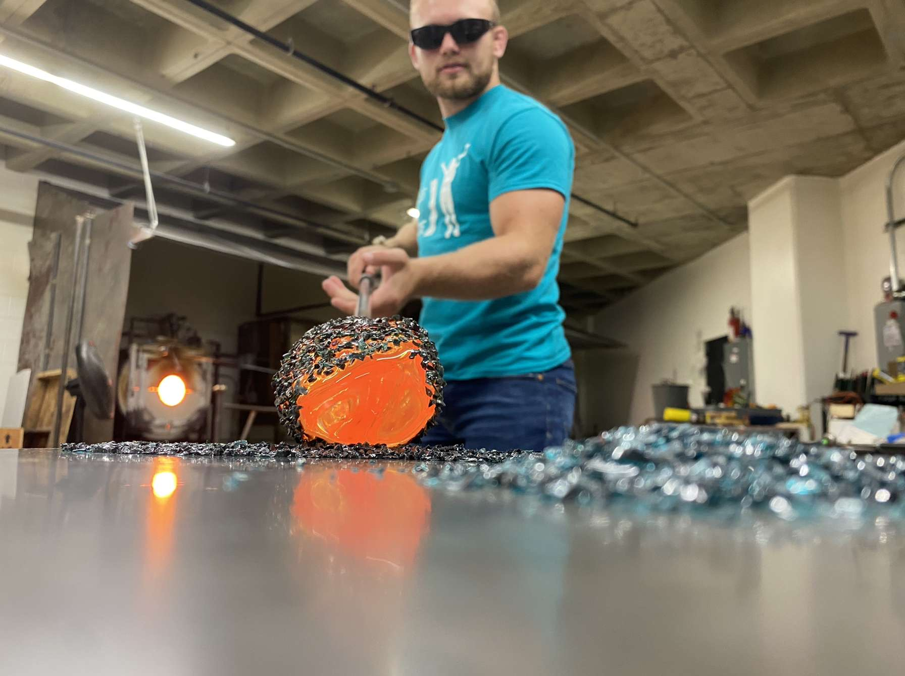

About Me
My name is Abe,
I love learning, I love being challenged, and
I love helping others do the same. College has provided
me with countless opportunities to pursue these passions, and it is
this journey that drives my ambition to become a professor.
Goals
My goals revolve around creating a joyous and loving world. I believe that starting in my own little corner—even if it's just with one person—can inspire others to do the same. At Loras, I've worked as a supplemental instructor for Physics 1, Physics 2, and Intro to Robotics, where I fell in love with teaching. I've contributed to the community by volunteering at the Dubuque Arboretum and Botanical Gardens, helping create a beautiful space for people to relax and enjoy nature, and back home at my old high school leading practices for the wrestling team. I've also volunteered at the Heitkamp Planetarium, giving educational presentations to local schools and clubs. Additionally, I work to combat the stigma surrounding mental health by pioneering and leading "Mindset Meetings" for the Loras wrestling team. These meetings provide a safe space for the team to discuss mental challenges related to school, athletics, and life.Education
I went to college with the intention of graduating early with a degree in engineering but quickly fell in love with the academic environment of college. This love for learning led me to prusue a double major in electro-mechanical engineering and computer science with minors in psychology, mathematics, physics, and analytics.Through this journey, I've come to appreciate the value of an interdiciplinary education. Whether it's understanding the psychology of users while developing software or the physics behind the product you're marketing, broadening our learning deepens our understanding of the world we live in. I belive that learning about something leads to caring about it, which breaks down barriers to making an impact.
Coding
I get lost in coding. Hours can go by without me noticing and I love it. Most of the projects I work on are in pursuit of learning, whether it's about something like ASL and machine learning, facial recognition, or web scraping. My coding journey began senior year of high school when I got to take an experimental class covering SolidWORKS and Unity Engine (C#) where I made my first game. The following couple years consisted of prototyping small games until I attempted facial recognition as a means of learning Python. This expansion from C# led to an eagerness to explore other languages, so I started doing some LeetCode problems to learn C++. Eventually, I had a very supportive friend who sent me a job posting for a position as a software test architect at John Deere. While this was an engineering position it quickly convinced me to add computer science as a major. My love for coding has only grown since.Wrestling
I originally didn't have wrestling as it's own section, but it's had such a profound impact on my life that I couldn't leave it out. Much of who I am is because of wrestling, and that goes far beyond "wrestling made me tough." It shaped how I approach learning—with a playful and open mind—and influenced the relationships I've built. While this may be something that can be said about many sports, I found it in wrestling. The community you become a part of is incredibly welcoming and vibrant.With all the highs that come from wrestling, there are just as many lows, and I think that's what makes it special. There's no one else to blame other than yourself, and while humbling, it's also empowering. Although your success is all on you, no one can succeed at a high level on their own. This applies everywhere. Just as you need a partner or coach to push you when things get hard; a teacher, friend, or collegue can help you chase your goals or overcome the next obstacle.
I've had so many influential coaches, friends, and teammates that are largely responsible for why I am where I am today. My appreciation for them is why I strive to give back to the community that has given so much to me. I love going back to my high school to show technique and talk with old coaches. This same passion drives me in education—I want to be able to give back. I've begun giving back through my role as a supplemental instructor, and it's this same desire to inspire, mentor, and empower others that drives my dream of becoming a professor. Just as wrestling shaped who I am, I want to help shape those who come after me.

Officiating at a local youth tournament
Hobbies
Creating
I love to make things regardless of the medium. There's something special about making something from nothing that makes me really happy. Below is a collection of little creations that didn't make the projects page.

Learning how to glass blow

Sunset painting
Water colors in Nesso, Italy
Secret Shelf (closed)
Secret Shelf (open)

Flywheel Workout Trainer
Yoshi Drawing
Turtle Drawing
Macrame Plant Holder
Reading
Books have been a significant part of my life. When I was little, I would go out and explore the world, only to rush back inside and look up the curious creatures I encountered in my National Audubon Society field guides. Reading turned hour-long bus rides to school into adventures I couldn't wait to immerse myself in. When I reached high school, one of my coaches would recommend books on mindset, philosophy, and athletic performance, which ignited my passion for psychology. In college, I found myself reading about stoicism and Marcus Aurelius' journel to discuss with my teammates. Much of who I am today is because of books.-
A short list of books I highly recommend,
- Mastery by Robert Greene
- Nonviolent Communication by Dr. Marshall B. Rosenberg
- Gates of Fire by Steven Pressfield
- The Daily Stoic by Ryan Holiday
- Meditations by Marcus Aurelius
- How Will You Measure Your Life by Clayton M. Christensen
- The Secret Pulse of Time by Stefan Klein
- Do Hard Things by Steve Magness
- The Mastery of Self by Don Miguel Ruiz Jr.
Cooking & Travel
Growing up in a small town in Iowa, it was always a treat to go to another town and eat new food. I find food to be a glimpse into the lives of the people who live in an area which is why I love cooking. I feel that I'm able to share a part of myself through the food I make. The architecture of different places tell stories in a similar way. The quiant countryside of Italy tells a vastly different story than the rural farm houses of Iowa. Below are some photos of some of the wonderful food and places I've made and experienced.
Keeping Bees

Nesso, Italy

Nesso, Italy